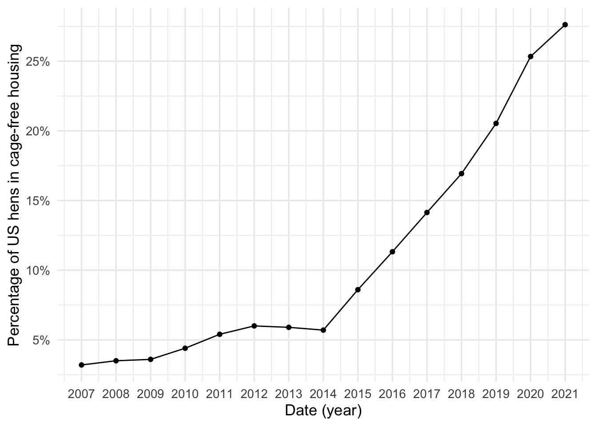

Lesson 1
Overview of Data Mining and Machine Learning
Learning Objectives
After this lesson, students will be able to:
Recall how to load, manipulate, and plot data in R.
Recall the basic data science workflow.
State in general terms what we mean by data mining and machine learning, also known as statistical learning.
Recognize where data mining and machine learning fit into the basic data science workflow.
Readings, etc.
Read Chapter 1 of An Introduction to Statistical Learning (Tibshirani, James, and Trevor 2017).
The following two video lectures are also recommended:
- Motivating problems for machine (statistical) learning. Watch video on YouTube.
- Supervised and unsupervised learning. Watch video on YouTube.
- Skim the README for the Tidy Tuesday data repository (Mock 2018). View the repository. Throughout the semester, we will use example data from the Tidy Tuesday data repository.
Course Overview
This course provides coverage of essential topics in data science at the intermediate level with an emphasis on machine learning. Broadly, we will cover algorithms that are commonly used for gaining insight from data. The things you learn in the class will be applicable in a variety of different areas, professions, and even other classes.
There is a website for the course, view the website. For course logistics, see the official course syllabus, view the syllabus. Assignments and other information specific to the course in a given semester will be posted on the course learning management system (LMS). The course website provides links to many additional resources, view the links.
While we will refer often to several texts (most of which have been published online as open access materials) throughout the course, most of the content will be delivered via “notebooks” like the one you’re reading now1 that intermix text, mathematical notation, figures, programming language code, and web links. In some cases, you will be asked to go through the notebooks on your own and sometimes we will go through the notebooks together. Either way, any time you encounter code in a notebook, it is expected that you will take the time to run any code (mostly by copying and pasting) for yourself. The only way to master the material is through active participation.
For this course, we assume that students have some prior experience in using a programming language like R or Python to analyze data. In particular, it is assumed that students in the course can load, clean and plot data in R or Python. A facility in working with data frames via an R package like dplyr or the pandas Python library is assumed. We also assume students can use ggplot2 in R or matplotlib in Python for making appropriate plots of data. A great resource for the assumed programming background is R for Data Science (Wickham and Grolemund 2016). View the online version of R for Data Science. You can also review material from the prerequisite course DS 201 Introduction to Data Science, view the DS 201 course website.
During the course, our preference tends toward using R for examples and application. Coding will be essential for assignments and it is recommended that students use R on coding assignments. However, students may request to use another language such as Python, requests will be granted or denied by the instructor on a case-by-case basis with a rationale for the decision provided.
Why R?
The R language (r2023?) for statistical computing is one of the most popular computing tools for data science, among the other most popular are Python and Julia. Some of the strengths of R include
free and open source which facilitates reproducibility and auditability,
ecosystem of packages that greatly extend the functionality of R,
rmarkdown (rmarkdown2020?) and Quarto frameworks for literate programming enable presentation and communication of data analyses and facilitate reproducibility and auditability,
RStudio integrated development environment (IDE) by Posit enhances programming, RStudio also supports other languages like Python and Julia making it possible to work across different languages,
a strong and collaborative user community, see R Community Explorer website, view the website..
An refresher
This section reviews some coding in R with which the student is assumed to have some familiarity such as from the prerequisite course DS 201 Introduction to Data Science.

Throughout the course, we will make use of many R packages. For example, we will use the tidyverse package (which is a meta package that contains packages such as dplyr and ggplot2), the tidytuesdayR package for importing data from the Tidy Tuesday data repository (Mock 2018), and the ISLR2 package corresponding to the textbook An Introduction to Statistical Learning (Tibshirani, James, and Trevor 2017). Packages contain data, functions, etc. An R package must be installed before it can be loaded and used. You only need to install a package once, but you have to load packages at each new R session.
There are two common ways to install packages:
If using the RStudio IDE (highly recommended), use the Install button on the Packages tab. All you have to do then is to search for the package you want to install and click the Install option. Note that this is most useful for R packages available through the Comprehensive R Archive Network (CRAN).
With the
install.packagesfunction. For example,
install.packages(c("tidyverse","tidytuesdayR","ISLR2"))If you want to install a package from some other repository, refer to the documentation, do a web search, or ask the instructor.
To load packages, use
# load packages used in document
library(tidyverse)
library(tidytuesdayR)
library(ISLR2)Now, functions, data, etc. from these packages will be available for reference by name. For example, we can access the documentation for the tt_load function from tidytuesdayR package by running the command
?tt_loadThis informs us that to load data from the TidyTuesday Github, we need to input a character corresponding to the date for that particular data set. For example,
tt_data_examp <- tt_load("2023-04-11")downloads two data files, egg-production.csv and cage-free-percentages.csv from the April 11, 2023 Tidy Tuesday post. We can access the egg production data as a data frame as follows:
egg_prod_df <- tt_data_examp$`egg-production`The first few rows of this data set look as follows:
| observed_month | prod_type | prod_process | n_hens | n_eggs | source |
|---|---|---|---|---|---|
| 2016-07-31 | hatching eggs | all | 57975000 | 1147000000 | ChicEggs-09-23-2016.pdf |
| 2016-08-31 | hatching eggs | all | 57595000 | 1142700000 | ChicEggs-10-21-2016.pdf |
| 2016-09-30 | hatching eggs | all | 57161000 | 1093300000 | ChicEggs-11-22-2016.pdf |
| 2016-10-31 | hatching eggs | all | 56857000 | 1126700000 | ChicEggs-12-23-2016.pdf |
| 2016-11-30 | hatching eggs | all | 57116000 | 1096600000 | ChicEggs-01-24-2017.pdf |
| 2016-12-31 | hatching eggs | all | 57750000 | 1132900000 | ChicEggs-02-28-2017.pdf |
Let’s use the glimpse function to get a quick sense of what’s in this data:
glimpse(egg_prod_df)Rows: 220
Columns: 6
$ observed_month <date> 2016-07-31, 2016-08-31, 2016-09-30, 2016-10-31, 2016-1…
$ prod_type <chr> "hatching eggs", "hatching eggs", "hatching eggs", "hat…
$ prod_process <chr> "all", "all", "all", "all", "all", "all", "all", "all",…
$ n_hens <dbl> 57975000, 57595000, 57161000, 56857000, 57116000, 57750…
$ n_eggs <dbl> 1147000000, 1142700000, 1093300000, 1126700000, 1096600…
$ source <chr> "ChicEggs-09-23-2016.pdf", "ChicEggs-10-21-2016.pdf", "…Question: What are some initial questions we might want to address using the egg production data? Read through the repository for the egg production data view repository. Further, see the report summary by The Human League project. What do the researchers report based on an analysis of the data?
Exercise: Examine the data downloaded as cage-free-percentages.csv. What information does it contain?
The following R code essentially reproduces Figure 2 from the egg production report by The Human League, see the report:
Code
cage_free_df %>%
mutate(year=lubridate::year(observed_month)) %>%
group_by(year) %>%
summarise(percent_hens=mean(percent_hens)) %>%
ggplot(aes(x=year,y=percent_hens)) +
geom_point() +
geom_line() +
scale_x_continuous(breaks=2007:2021) +
scale_y_continuous(breaks=seq(0,30,by=5),labels=paste0(as.character(seq(0,30,by=5)),"%")) +
labs(x="Date (year)",y="Percentage of US hens in cage-free housing")
Question: What does the plot in Figure 1 show?
Exercise: Carefully examine the code used to make Figure 1. What does each line of the code do? Note that these are the types of basic data manipulations and plots you should be comfortable making entering into DS 362.
Exercise: Look at the list of data sets contained in the ISLR2 package by running the command data(package="ISLR2"). Pick two of the data sets and determine what information is contained in your chosen data sets. Make a couple of basic plots using one of the data sets you chose.
Review of the Data Science Workflow
Before starting our study of data mining and machine learning, let’s review the basic data science workflow as covered in an introductory level data science course. Generally, the steps in the workflow are:
Gather data with the goal of using it to gain insight to answer questions or address problems in a specific domain of application. If you’re going to use machine learning as part of your data analysis, this is a good place to make sure that you have enough data and also to split your data into a training set and test set.
Document the data and data collection process.
- It is important to think carefully about the type of data that is collected and how the data is generated and collected. Data is often generated or collected in such a way that it will contain or reflect biases, misinformation, incomplete information, or other problematic features. When you use data or models to make a decision, the problematic features of the data may influence the decision made with unforeseen negative consequences. See The Alignment Problem by Brian Christian for a thoughtful discussion on the issues related to these types of considerations (Christian 2020).
Import the data for analysis. If you have not already, you may want to split your data into a training set and test set.
Explore, clean, and transform the data. Data visualization is essential at this step. Make sure to apply the same manipulations used for cleaning and transformation to both the training and test sets.
Generate initial insight or more detailed questions.
Steps 4-5 constitute an exploratory data analysis (EDA). It is typical to conduct EDA before doing any more sophisticated analyses such as machine learning, and this is a habit you should get into. Students are assumed to be familiar with the EDA process from DS 201. If you need a refresher, the following video is recommended:
Exploratory data analysis worked example video by Hadley Wickham, watch the video on YouTube.
Decide what type(s) of analysis or analyses are to be performed. This is the stage at which machine learning enters into the process.
- Make sure to clearly state what the goals of an analysis are. There are several different types of analyses of data that are common to conduct. See Table 1.1 from (timbers2022data?) for a list of these typical analysis types with corresponding examples of questions appropriate for a particular type of analysis, link to table here.
Assess the analysis. In particular, use an appropriate metric to estimate model error.
At this stage, it may be necessary to repeat steps 1 - 7.
Report your findings/results documenting each step in the analysis, and state your conclusions in the context of the question, problem, or application that motivated your analysis.
It is essential the our data science workflow be reproducible and auditable. That is, each step in a data analysis should be accessible and understandable to others (auditability) and anyone with access to your analysis should be able to re-run the analysis from start to finish and get the same result you did (reproducibility). Figure 2 illustrates the concept of reproducibility.

Overview of data mining and machine learning
Preparation for the next lesson
For the next lesson:
Read section 2.1 from of An Introduction to Statistical Learning (Tibshirani, James, and Trevor 2017). You may also want to read sections 2.1 and 2.2 of Statistical Learning with Math and R (Suzuki 2020).
Watch the corresponding video lecture on regression. View on YouTube.
References
Christian, Brian. 2020. The Alignment Problem: Machine Learning and Human Values. WW Norton & Company.
Mock, J. Thomas. 2018. “Tidy Tuesday.” GitHub Repository. https://github.com/rfordatascience/tidytuesday; GitHub.
Suzuki, Joe. 2020. Statistical Learning with Math and r. Springer.
Tibshirani, Hastie Robert, Gareth James, and Daniela Witten Trevor. 2017. An Introduction to Statistical Learning. springer publication.
Wickham, Hadley, and Garrett Grolemund. 2016. R for Data Science: Import, Tidy, Transform, Visualize, and Model Data. " O’Reilly Media, Inc.".
Expand for Session Info
─ Session info ───────────────────────────────────────────────────────────────
setting value
version R version 4.3.0 (2023-04-21)
os macOS Ventura 13.4
system aarch64, darwin20
ui X11
language (EN)
collate en_US.UTF-8
ctype en_US.UTF-8
tz America/New_York
date 2023-06-08
pandoc 2.19.2 @ /Applications/RStudio.app/Contents/Resources/app/quarto/bin/tools/ (via rmarkdown)
quarto 1.3.361 @ /usr/local/bin/quarto
─ Packages ───────────────────────────────────────────────────────────────────
package * version date (UTC) lib source
dplyr * 1.1.2 2023-04-20 [1] CRAN (R 4.3.0)
forcats * 1.0.0 2023-01-29 [1] CRAN (R 4.3.0)
ggplot2 * 3.4.2 2023-04-03 [1] CRAN (R 4.3.0)
ISLR2 * 1.3-2 2022-11-20 [1] CRAN (R 4.3.0)
lubridate * 1.9.2 2023-02-10 [1] CRAN (R 4.3.0)
purrr * 1.0.1 2023-01-10 [1] CRAN (R 4.3.0)
readr * 2.1.4 2023-02-10 [1] CRAN (R 4.3.0)
sessioninfo * 1.2.2 2021-12-06 [1] CRAN (R 4.3.0)
stringr * 1.5.0 2022-12-02 [1] CRAN (R 4.3.0)
tibble * 3.2.1 2023-03-20 [1] CRAN (R 4.3.0)
tidyr * 1.3.0 2023-01-24 [1] CRAN (R 4.3.0)
tidytuesdayR * 1.0.2 2022-02-01 [1] CRAN (R 4.3.0)
tidyverse * 2.0.0 2023-02-22 [1] CRAN (R 4.3.0)
[1] /Library/Frameworks/R.framework/Versions/4.3-arm64/Resources/library
──────────────────────────────────────────────────────────────────────────────
Footnotes
The notebooks are created using Quarto and R markdown, topics that we will cover in more detail later.↩︎
Reuse
CC BY-NC-SA 4.0